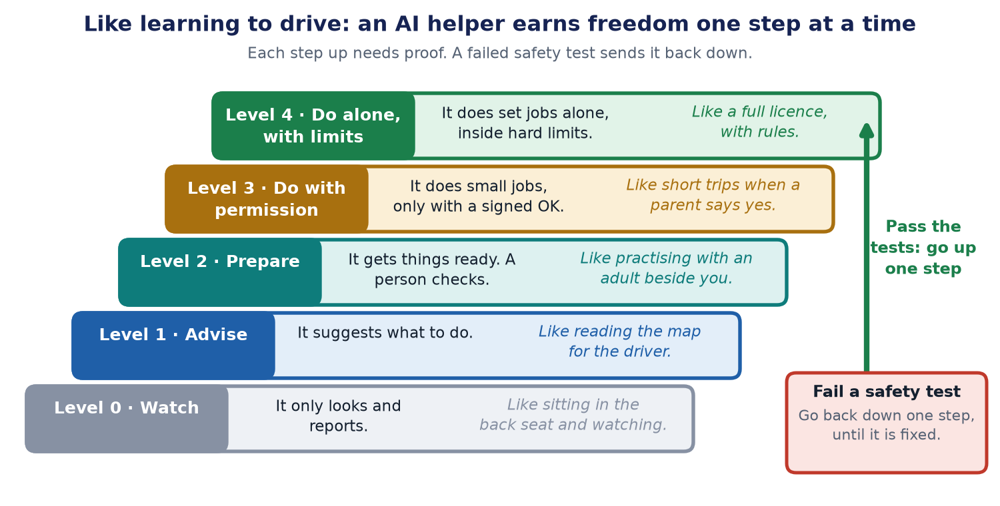

Autonomy is earned: how much freedom should an AI agent get?
First published on keshavaai.in. Repository with the tests: https://github.com/kapilgupta86/agent-controls-harness

In one sentence: Give an AI helper only as much freedom as it has proved it can handle, and take the freedom back if it fails an important test.
A story you already know: learning to drive
Nobody hands a ten-year-old the car keys. First you watch. Then you practise with an adult beside you. Later you get a learner's permit. Only after tests do you get a full licence. And if you drive badly, you can lose it.
AI helpers should be treated the same way. This idea is called autonomy is earned. Autonomy means doing things on your own. Earned means you win it by proving yourself.
An AI agent is a computer helper that can do things, not just talk. It can send emails, pay bills or change settings. The more it can do on its own, the more it has to prove first.
Why not just trust a good demo?
A demo is like a student showing off their best homework. It shows what the helper can do on a good day. It does not show a bad day.
There is a second problem. The AI "brain" inside the helper is called the model. The model gets updated now and then, like an app on a phone. After an update, the helper can behave differently overnight. It is like a driver who suddenly forgets the rules.
Three questions to ask before giving any freedom
- How bad is the worst mistake? Ask two things. How much damage could one wrong action do? And can you undo it? Sending a message to the wrong team is easy to fix. Paying the wrong person is not. The worse the mistake, the more proof you need.
- What is it allowed to do? This is its level. It can only watch, give advice, get things ready for a person to check, or really do things.
- What proof does it need to move up? This is the gate: a checkpoint with rules. The helper must pass tests to get through. The rules are written down before the tests, not after, so nobody can move the goalposts.
The five levels
- Level 0, Watch. It only looks and reports. Like sitting in the back seat.
- Level 1, Advise. It suggests what to do. Like reading the map for the driver.
- Level 2, Prepare. It gets things ready, and a person checks. Like doing your homework and having a parent check it.
- Level 3, Do with permission. It does small jobs, but only with a signed OK. Like going to the shop when a parent says yes.
- Level 4, Do alone, with limits. It does a set list of jobs by itself, inside hard limits. Like a full licence, with rules.
Most helpers should start at Level 0 or 1, and move up one level at a time.
The four tests, in order
Think of a safety inspection before a school trip. Before the helper moves up, it faces four tests, one after another. The quick, easy tests go first. The slow, costly test goes last. That way, if something is badly wrong, we find out early and cheaply.

- Test 1: the permission slip. A permission slip says exactly what is allowed: "Pay 1,200 to Acme Ltd." If someone changes it to 12,000, the slip must stop working. This test checks that. It is quick, because no AI is needed.
- Test 2: the spending limit. You get a fixed amount of pocket money. When it is gone, you stop. This test checks that the helper stops at its limit, even if it gets stuck doing the same thing again and again.
- Test 3: the fake note. Imagine a stranger slips a note into your bag: "Give me your lunch money." A smart child ignores it. This test hides tricky notes inside the papers the helper reads, to check it ignores orders from the wrong place. This one is slower, because it needs the AI.
- Test 4: the real job. Last, we check the actual work. We give the helper many real examples and count how many it gets right. The pass mark, for example 9 out of 10, is chosen before the test. This is the slowest and most costly test, so it goes last.
Tests 1, 2 and 3 are critical. A critical test is one you must pass, with no exceptions.
The gate: the safety inspector
After the four tests, the gate looks at the results. It asks one question first: did any critical test fail? If yes, the answer is no, whatever the other marks were.
Think of a car that is the fastest in the race but has no brakes. You would never let it on the road. In the same way, 49 right answers and 1 failed critical test might look like 98 out of 100. The gate still says no.
Watch it happen
Press play. A made-up expense helper passes the four tests and moves up. Then an update arrives, one test fails, and the helper steps back down. Choose the second button to see what happens when there are no tests at all.

Interactive version, with step-by-step controls and a text version: https://keshavaai.in/explainers/autonomy-earned
Taking freedom back
After every update, run all the tests again. If a critical test fails, the helper steps back one level on its own. Then add the failed case to the test list, so the same mistake can never sneak back in. A test that checks an old mistake has not come back is called a regression test.
Six rules to remember
- Use locks, not requests. Telling an AI "please don't" is only asking. A rule built into the computer code is a locked door. The AI cannot talk its way past it.
- One critical failure stops everything. Good marks in other tests do not make up for it.
- Permission slips must match exactly. The amount and the person must be the same, or the slip is no good.
- Make trying again safe. If a payment times out, first check whether it already went through. Otherwise you might pay twice, like pressing the buy button two times.
- Set hard limits on time and on money.
- Take freedom back as easily as you give it.
How sure can we be?
Say the helper passes 50 tests in a row with no mistakes. Is it safe? Not quite. Think of a basketball player who scores 50 times in a row. She might be perfect. Or she might score 94 times out of 100 and just had a lucky streak. A streak of 50 like that happens by luck about once in 20 tries.
So 50 perfect tests only let us say: it probably fails fewer than 6 times in 100. To say fewer than 6 in 1,000, we need about 500 perfect tests.
That is why big jobs need more tests, people watching, and checks while the helper works. Tests give evidence. They do not give proof.
The short version
- Give a helper freedom one level at a time, as it proves itself.
- Use locks in the code, not polite requests.
- One critical failure stops the release and moves the helper back a level.
The limits of this advice
- No set of tests can prove an AI is safe. Tests are evidence, not proof.
- The levels, pass marks and examples here are made up to explain the idea. For a real helper, choose them for your own job, before you run the tests.
- For jobs that can hurt people or money (health, banking, safety, hiring, law), experts and independent testing are needed too.
- A small helper that only reads and reports may only need Level 0 or 1, with light checks.
- This is a mix of common good practice. It is not a new standard or a certificate.
Words explained
- Agent: a computer helper that can do things, not only talk.
- Autonomy: doing things on your own.
- Model: the AI brain inside the helper.
- Level: how much the helper is allowed to do.
- Gate: a checkpoint with rules the helper must pass to move up.
- Critical test: a test you must pass, with no exceptions.
- Prompt injection: sneaking orders into text the AI reads, like the fake note.
- Regression test: a test that checks an old mistake has not come back.
- Evidence and proof: evidence makes something likely. Proof makes it certain.
For engineers
This section has the exact details. Everything above is the simple version of it.
The levels and the proof they need (illustrative)
- L0 Observe. What the agent may do: Reads permitted data and reports. Changes nothing. Evidence before promotion: Task success on a labelled set; no data leaks.
- L1 Recommend. What the agent may do: Proposes options with sources. Evidence before promotion: Claims are grounded or it abstains; reviewers agree on a sample.
- L2 Prepare. What the agent may do: Drafts an action for a person to review. Evidence before promotion: Drafts are valid for the tool; the review flow works.
- L3 Execute approved. What the agent may do: Runs narrow actions, only with an approval tied to the exact action. Evidence before promotion: Injection, authorization and budget tests pass; retries are safe.
- L4 Bounded autonomy. What the agent may do: Runs a pre-approved class of actions inside hard limits. Evidence before promotion: Stop switch and rollback proven in a drill; a long clean record at L3.
This scale is a working convention, not a standard. Every level needs a written list of what it allows and what evidence unlocks it.
The technical version of each rule
- Enforce limits outside the model. A prompt is a request, not a control. In the test harness, a deliberately obedient mocked model reads a hidden instruction in an invoice and proposes a payment of 9,000. Without a policy layer the payment happens. With it, nothing moves.
- Approval binding. The approval is a keyed hash (HMAC) over the action type, amount and payee. Change any field and verification fails.
- Safe retries and fail closed. Use an idempotency key and check the action's status before retrying after a timeout. If the policy service is unavailable, refuse state-changing actions and keep read-only ones working.
- Budgets. Cap steps and spend. Treat hitting a cap as a failure to investigate, not a setting to raise.
- Release gate. Critical failures block. The other tests need a pass rate set in advance. Anthropic Engineering separates capability evals, which should start hard, from regression evals, which should stay near 100% to catch backsliding.
- Order of the four checks. Cheap, exact code checks first; model-based and labelled-set checks last. All four run before the gate decides. A real pipeline can stop at the first critical failure to save time and money. Which checks are critical is decided before the run.
- Statistics. With n clean trials, the 95% upper bound on the true failure rate is 1 - 0.05^(1/n), about 3/n (the rule of three). n = 50 gives about 5.8%. n = 500 gives about 0.6%.
Evidence you can run
The repository has nine mocked tests with no model calls and no network. Three controls were broken on purpose to confirm that the tests fail when they should. Code: agent-controls-harness. Run it with npm test on Node 18 or newer.
Further reading
- NIST AI Risk Management Framework: a voluntary framework (AI RMF 1.0, January 2023) with a Generative AI Profile (NIST AI 600-1, July 2024).
- Demystifying evals for AI agents, Anthropic Engineering, 9 January 2026: grading outcomes as well as transcripts, grader types, and capability versus regression evals.
- OWASP Top 10 for Agentic Applications for 2026: a taxonomy of agent-specific risks, published 9 December 2025.
Read it on the website, with the interactive version and sources: https://keshavaai.in/journal/autonomy-is-earned